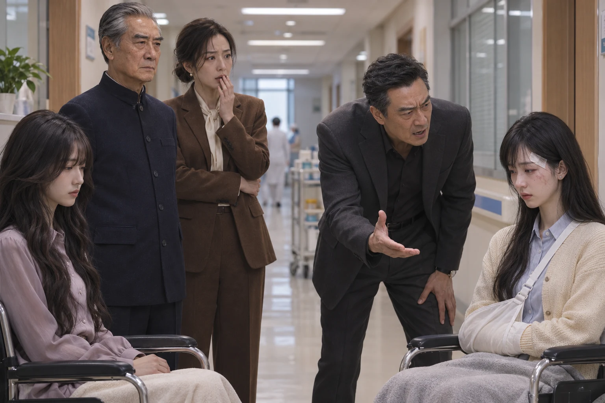
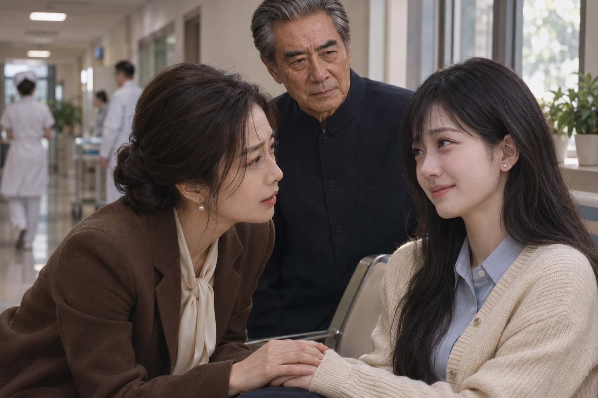
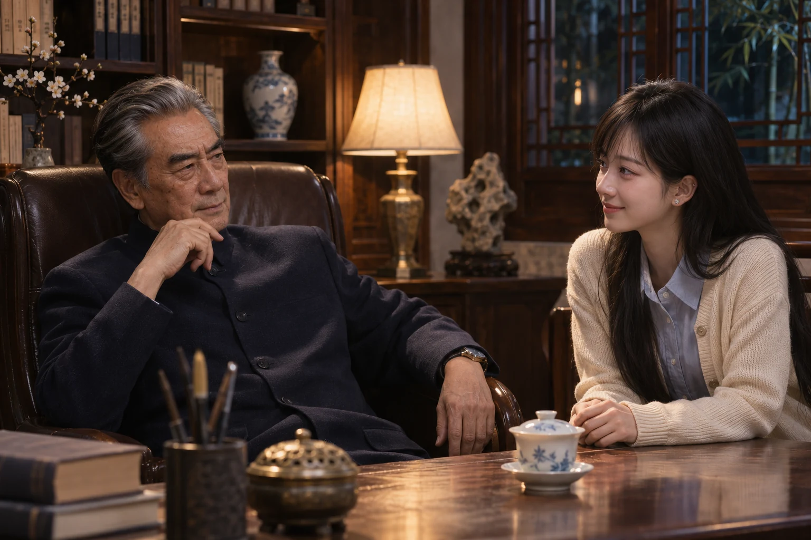

ตอนที่ 20
พลาดไปแล้ว
เรือนร่างบอบบางถูกประคองไว้ตลอดเวลา หากแต่ซ่งหว่านก็ยังไม่อาจเปล่งเสียงได้ตามปกติ ใจจริงเธออยากปฏิเสธว่าจะไม่ไปโรงพยาบาล เพราะเธอจุกจนแทบหายใจไม่ออก การออกแรงก้าวเดินเป็นเรื่องยากลำบากสำหรับเธอ
ยิ่งเห็นซ่งอวิ๋นทำหน้าตาเหยเก ร้องโอดโอยเป็นระยะ เธอยิ่งโมโห อีกฝ่ายล้มทับ มิหนำซ้ำยังเอาหัวเข่ากระแทกท้องเธอ แล้วจะมาสำออยอะไรกัน
“โรงพยาบาลอยู่ใกล้ ๆ นี่เอง อดทนหน่อยนะคะ” หญิงสาวทั้งสองช่วยกันพาคนเจ็บส่งโรงพยาบาล ซึ่งอยู่ห่างออกไปไม่ถึงห้านาที
เมื่อมาถึงซ่งอวิ๋นและซ่งหว่านก็ถูกพาเข้าห้องตรวจ ระหว่างทางซ่งอวิ๋นไม่ลืมขอช่องทางติดต่อจากทั้งสอง เพราะอยากตอบแทนด้วยการเลี้ยงอาหารสักมื้อ ซึ่งสองสาวไม่ได้ปฏิเสธ
ใช่ว่าพวกเธอทำดีเพื่อหวังสิ่งตอบแทนอะไร แต่ให้ปฏิเสธความตั้งใจของสาวสวยรุ่นน้องก็ทำไม่ลง
ผู้เฒ่าซ่งได้รับคำรายงานจากบอดี้การ์ดเกี่ยวกับเรื่องที่เกิดขึ้น เขาเดินทางมาโรงพยาบาลพร้อมกับลูกสะใภ้ภายในเวลาไม่นานนัก ซ่งเหวินและเจียงเซินเองก็ทราบเรื่องนี้แล้วเช่นกัน จึงมาถึงโรงพยาบาลในเวลาไล่เลี่ยกับผู้เฒ่าซ่ง
ซึ่งเมื่อพวกเขามาถึงก็เป็นจังหวะที่ทั้งสองถูกเข็นออกจากห้องตรวจ
“เกิดอะไรขึ้น ลูกควบคุมอารมณ์ตัวเองไม่ได้ขนาดนั้นเลยรึไง!!” ซ่งเหวินโกรธเกรี้ยว เพราะคิดว่าลูกสาวของเขาจงใจทำร้ายร่างกายพี่สาวตัวเอง
“...” ทุกคนอึ้งไปทันที โจวจิ่วเองก็ตกตะลึงไปเช่นเดียวกัน เขายังไม่ได้ถามที่มาที่ไป แต่กลับปักใจเชื่อไปแล้วว่าเสี่ยวอวิ๋นเป็นฝ่ายผิด

“หนูควบคุมอารมณ์ตัวเองไม่ได้?” ซ่งอวิ๋นเงยหน้าขึ้นจับจ้องนัยน์ตาคมคายที่เคยอบอุ่นของผู้เป็นพ่อ เวลานี้มันมีแต่ความโกรธและผิดหวัง พานให้ปวดแปลบ ๆ ในอก จึงเลื่อนสายตาไปมองเจียงเซิน แม้เขาไม่ได้พูดอะไร แต่สีหน้าเขาบอกทุกสิ่งทุกอย่างหมดแล้ว
เหตุการณ์นี้เหมือนในความฝันไม่มีผิด เมื่อถูกดึงไปอยู่ข้างนางเอกแล้ว ไม่ว่าเกิดเรื่องอะไรขึ้น เธอมักเป็นฝ่ายผิดเสมอ
“ลูกมีปัญหาในการควบคุมอารมณ์มานานแล้ว โดนตามใจจนเสียนิสัย ต่อให้ลูกไม่ชอบพี่สาวขนาดไหน ก็ไม่ควรทำร้ายร่างกายกันแบบนี้”
“ไม่ใช่แบบนั้นนะคะคุณพ่อ” ซ่งหว่านข่มกลั้นอาการจุกเสียด แสดงตัวเป็นคนดี ราวกับอยากจะปกป้องซ่งอวิ๋นแม้ถูกอีกฝ่ายทำร้ายจนกายใจบอบช้ำ
เห็นดังนั้นซ่งอวิ๋นก็เกือบหลุดเสียงหัวเราะเย้ยหยัน ช่างเป็นการแสดงที่แนบเนียนเสียจริง ดูแล้วน่าสงสารจนชวนให้คนปวดใจ พ่อของเธอก็คงปวดใจดังว่า ถึงได้รีบเข้าไปหาราวกับจะประคองไข่ทุกไว้บนฝ่ามือ
“ลูกไม่ต้องปกป้องน้องอีกแล้ว เกิดเรื่องใหญ่ขนาดนี้ อาอวิ๋นควรเรียนรู้ที่จะเติบโตเสียที” ซ่งเหวินมั่นใจว่าลูกสาวคนรองต้องเป็นคนก่อปัญหาแน่ ทว่าความคิดของเขาถูกขัดด้วยน้ำเสียงแข็งกร้าวกัมปนาทของผู้เป็นพ่อ
“พอ พอได้แล้ว!” ผู้เฒ่าซ่งหมดความอดทน ยกไม้เท้าขึ้นและฟาดแผ่นหลังกว้างเต็มแรง
“อั่ก!!” ซ่งเหวินเข่าทรุด แรงหวดของซ่งเต๋อนั้นดีไม่มีตก ไม่ได้ฟาดเพียงครั้งเดียวเท่านั้น แต่ฟาดสามสี่ครั้งติด ๆ กัน
เจียงเซินหวั่นเกรงจนเผลอถอยหลังไปหนึ่งก้าว ทว่าในใจต่อต้านมากขึ้น เพราะเขารู้สึกว่าลุงใหญ่พูดถูกทุกอย่าง ซ่งอวิ๋นควรปรับเปลี่ยนนิสัยเสียที
“คะ คุณปู่ หยุดเถอะค่ะ หนูขอร้อง” ซ่งหว่านสะอึกสะอื้นประหนึ่งคนขวัญเสีย
ซ่งเต๋อเมินเฉยท่าทีน่าสงสารของซ่งหว่าน ส่งไม้เท้าให้ลูกน้องคนสนิท เอามือไพล่หลังและซักไซ้ว่าเกิดอะไรขึ้น “อวิ๋นเอ๋อร์ หลานพูดมา”
“ค่ะคุณปู่” ซ่งอวิ๋นตาแดงก่ำ เล่าเรื่องที่เกิดขึ้นให้ปู่ซ่งฟัง “หลังจากซ้อมร้องเพลงแล้ว หนูไปเข้าห้องน้ำ บังเอิญเจอซ่งหว่าน พวกเราไม่ได้มีปัญหาอะไรกันนะคะ แค่หนูสะดุดเท้าของซ่งหว่าน เลยล้มไปด้วยกัน”
ก่อนหน้านี้ซ่งเต๋อได้รับคำรายงานเหตุการณ์คร่าว ๆ ว่าซ่งอวิ๋นถูกพาไปโรงพยาบาล แต่ไม่รู้ว่าเกิดอะไรขึ้นในห้องน้ำ
ในใจเขาไม่เชื่อว่าหลานสาวจะไปทำร้ายร่างกายซ่งหว่านก่อน เพราะหากจะทำคงทำไปนานแล้ว ไม่ปล่อยเวลาล่วงเลยมาเช่นนี้
“สะดุดเท้างั้นเหรอ?”
“ค่ะคุณปู่ ล้างมือที่อ่างล้างหน้าข้าง ๆ กัน หนูสะดุดเท้าซ่งหว่าน เลยเผลอคว้าตัวเธอล้มไปด้วยกัน” ซ่งอวิ๋นไม่ได้โกหกเลยสักนิด แค่ไม่ได้เล่าว่าเธอจงใจสะดุดตามที่อีกฝ่ายต้องการ
“แล้วเจ็บตรงไหนมากหรือเปล่าลูก” โจวจิ่วสงบสติอารมณ์ ไม่ปล่อยให้ความโกรธอยู่เหนือเหตุผล ซ่งเหวินตอกย้ำซ้ำแล้วซ้ำเล่าว่าเสี่ยวอวิ๋นมีความสำคัญในใจเขาน้อยกว่าซ่งหว่าน
เขาไม่ถามสักคำว่าเสี่ยวอวิ๋นเจ็บตรงไหน ในขณะที่แทบประคองซ่งหว่านไว้ในอุ้งมือ มิหนำซ้ำยังตำหนิโดยไม่ซักถามความจริง
“มีรอยฟกช้ำนิดหน่อยค่ะ แต่ซ่งหว่านคงเจ็บมากกว่าหนู” ซ่งอวิ๋นเปิดรอยช้ำตามร่างกายให้มารดาดู

มันคือสิ่งที่หลีกเลี่ยงไม่ได้ แต่เธอคิดว่าเจ็บตัวแค่นี้คุ้มค่าแล้ว
ซ่งเหวินปวดระบมไปทั่วแผ่นหลัง เขาหยัดกายลุกขึ้นยืนโดยได้รับการช่วยเหลือจากหลานชาย สายตาจับจ้องใบหน้าลูกสาว เป็นเชิงถามว่าสิ่งที่ซ่งอวิ๋นเล่านั้นเป็นเรื่องจริงหรือไม่
“คุณซ่งอวิ๋นพูดถูกค่ะ มันเป็นแค่อุบัติเหตุจริง ๆ” ซ่งหว่านรีบยืนยันพลางพยักหน้าหนัก ๆ หลายครั้ง ทว่าเมื่อพูดจบ นัยน์ตาหงส์กลับหลุบต่ำอย่างน้อยเนื้อต่ำใจ
เพียงเท่านั้นซ่งเหวินและเจียงเซินก็พร้อมคิดเข้าข้างไปแล้วว่าเธอโกหกเพื่อช่วยเหลือซ่งอวิ๋น
“หรือถ้าคุณพ่อไม่เชื่อ พี่สาวสองคนที่พาพวกเรามาส่งโรงพยาบาลเป็นพยานให้ได้นะคะ คนเข้าออกห้องน้ำเยอะขนาดนั้น ถึงหนูจะไร้หัวคิดยังไง ก็คงไม่สร้างความอับอายในตระกูลหรอกค่ะ” มุมปากที่มักยกขึ้นนิด ๆ อย่างเป็นธรรมชาติ คราวนี้คอยแต่จะเบะลงเพราะความน้อยใจอยู่ตลอดเวลา
เธอบอกตัวเองว่าให้ยอมรับความจริง ภาพจำพ่อผู้แสนอบอุ่นแตกสลายไปหมดแล้ว เวลาที่ผ่านมาเธอค่อย ๆ ชินชา แต่สุดท้ายลึก ๆ แล้วในใจเธอก็ยังจุกและเจ็บปวด
“...” ซ่งเหวินลมหายใจสะดุดกึก มีความลังเลวาบเข้ามาในดวงตา แต่สุดท้ายก็หายไป เชื่อหมดใจว่าซ่งอวิ๋นรังแกพี่สาว ส่วนซ่งหว่านก็เอาแต่ปกป้องน้องสาวเพราะโทษว่าตัวเองเป็นหนึ่งในสาเหตุที่ทำให้ครอบครัวคนอื่นแตกแยก
“ในเมื่อไม่มีอะไรแล้ว พวกเราแยกกลับบ้านเถอะค่ะคุณพ่อ เสี่ยวอวิ๋นจะได้พักผ่อน” โจวจิ่วพยายามเข้มแข็ง เป็นหลักยึดให้ลูกสาว
“ได้.. กลับบ้านกัน” ผู้เฒ่าซ่งรับไม้เท้าจากคนสนิท
“เดี๋ยวสิอาจิ่ว” ซ่งเหวินนึกบางอย่างขึ้นมาได้ ทั้งที่ก่อนหน้านี้เธอแทบไม่ได้อยู่ในสายตาเขาเลย “ให้เสี่ยวอวิ๋นมาใช้เวลากับผมบ้างได้ไหม”
โจวจิ่วชะงักฝีเท้า “คุณน่าจะอ่านข้อตกลงการหย่าอย่างละเอียดแล้ว ทุกอย่างจะเป็นไปตามข้อตกลงนั้น ไม่มีการเปลี่ยนแปลงหรือผ่อนปรนทั้งสิ้น”
“แต่เสี่ยวอวิ๋นก็เป็นลูกของผมเหมือนกัน คุณจะใจดำพรากพ่อพรากลูกเชียวเหรอ” ซ่งเหวินรู้สึกว่าหากปล่อยให้ซ่งอวิ๋นอยู่กับพ่อมากเกินไป เธออาจไม่ได้ปรับเปลี่ยนนิสัย ดังนั้นเขาจึงร้องขอเพื่อใช้เวลาสั่งสอนลูกเสียใหม่
“ถามใจคุณดูเถอะว่าเสี่ยวอวิ๋นมีความสำคัญในใจคุณจริงเหรอ ลูกเจ็บตัวคุณยังไม่ถามสักคำ คุณไม่ควรได้เป็นพ่อของเสี่ยวอวิ๋นเลยด้วยซ้ำ อีกอย่างเราหย่ากันแล้ว อย่าเรียกฉันอย่างสนิทสนมแบบนั้นอีก”
“...” ซ่งอวิ๋นตกตะลึง ความน้อยเนื้อต่ำใจลดน้อยลงไปอย่างไม่น่าเชื่อ
อาจเพราะบางคืนเธอมักได้ยินแม่แอบร้องไห้ แต่เพื่อเธอแล้ว ท่านกลับแสดงความเข้มแข็งได้อย่างน่าอัศจรรย์ นี่คือสิ่งที่เรียกว่าความรักของแม่หรือเปล่า
“ไม่ใช่แบบนั้น..” ซ่งเหวินอึกอักไปทันที หันมองลูกสาวก็เห็นเธอเมินหน้าหนีอย่างห่างเหิน เขาถึงรู้ว่าตัวเองพลาดไปแล้ว
...
ค่ำคืนเดียวกันนั้นซ่งอวิ๋นเข้าไปหาผู้เฒ่าซ่งในห้องทำงาน แล้วยอมรับตามตรงว่าเรื่องเมื่อตอนกลางวันเกิดอะไรขึ้น
“คราวหลังอย่าใช้วิธีที่ทำให้ตัวเองเจ็บตัว” ซ่งเต๋อเอนแผ่นหลังพิงพนักเก้าอี้ทำงาน นัยน์ตาฝ้าฟางของชายชราฉายประกายเฉียบคม
“ทำไมคุณปู่ดูไม่แปลกใจเท่าไหร่เลยล่ะคะ” หญิงสาวคาดไม่ถึงกับปฏิกิริยาตอบรับ เธอนึกว่าจะถูกตำหนิเสียอีก “บางทีหนูอาจเป็นฝ่ายหาเรื่องซ่งหว่านก็ได้นะคะ”
“ปู่เลี้ยงหลานมาตั้งแต่ยังตัวเท่าลูกแมว ย่อมรู้อยู่แล้วว่าหลานมีนิสัยยังไง แต่คราวหลังลองเปลี่ยนไปใช้วิธีอื่น อย่าให้ตัวเองต้องเจ็บตัว มันไม่คุ้มค่า”

ซ่งอวิ๋นอบอุ่นใจอย่างประหลาด พ่อไม่เข้าข้างก็ไม่เห็นเป็นไรเลย เธอยังมีคุณปู่อยู่นี่นา
“มันกะทันหันน่ะค่ะ อันที่จริงตอนเธอยื่นเท้าออกมา หนูสามารถหลบได้ แต่เลือกจะไม่หลบแล้วดึงเธอจนล้มก้นกระแทกพื้น คุณปู่คิดว่าหนูทำรุนแรงไปไหมคะ ยังไงเธอก็เป็นพี่สาว”
ผู้เฒ่าซ่งโบกมือ “เธออาจไม่ได้มีสายเลือดตระกูลซ่ง ไม่รู้ว่าไปได้ผลตรวจดีเอ็นเอมาด้วยวิธีไหน หรือต่อให้เป็นพี่สาวต่างแม่จริง การจงใจขัดขากัน ก็พิสูจน์แล้วว่าซ่งหว่านไม่ได้หวังดีกับหลาน”
ผู้เฒ่าซ่งพบเจอคนมามากเกินไป ตอนเห็นซ่งหว่านครั้งแรก เขาก็รับรู้ได้แล้วว่าเด็กคนนั้นไม่ใสซื่อและอ่อนโยนอย่างที่แสดงออก ในทางกลับกันก็เป็นเรื่องเข้าใจได้
ลูกซึ่งเกิดจากภรรยาน้อยมักมีปมด้อยในชีวิต ไม่ชอบลูกเมียหลวง อยากเด่นกว่า อยากเอาชนะ ซึ่งตัวเขาเองเคยอยู่ในฐานะลูกชายคนโตจากภรรยาหลวง จึงได้เห็นชัดเจนว่าพี่น้องเหล่านั้นอิจฉาริษยาจนก่อเรื่องใหญ่โตขนาดไหน
นั่นเป็นอีกหนึ่งเหตุผลที่เขาไม่ยอมรับเธอเข้าบ้าน